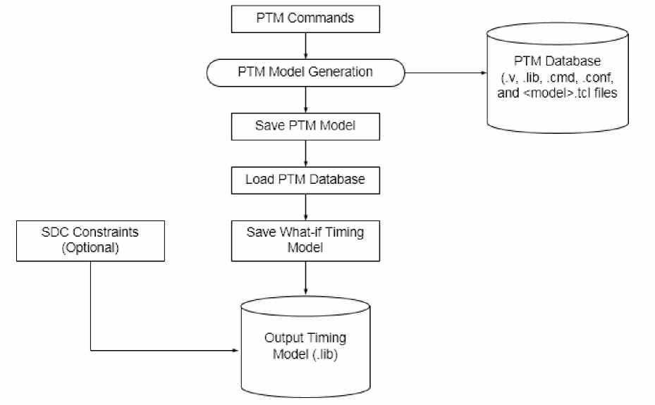
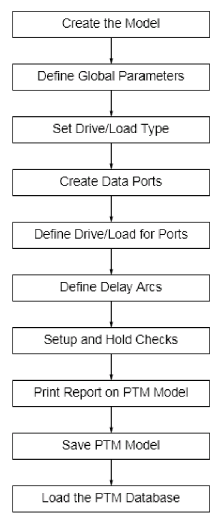
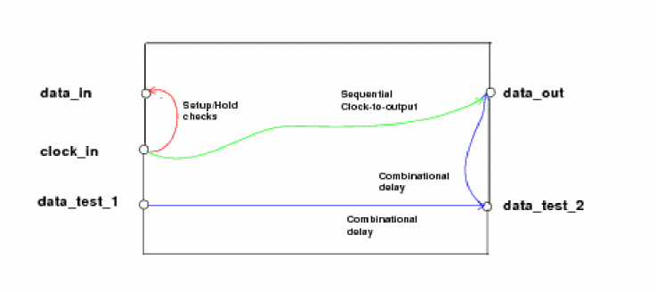

Using the PTM Flow to Generate Dotlib Model
The following diagram shows how the PTM commands are used to generate the PTM model database. This PTM model database is later used to save a What-If timing model, which can be used to generate a dotlib model that contains detailed timing information. You can optionally load the SDC constraints while generating the output dotlib model.

Command Flow
The following figure shows the PTM command flow for generating a dotlib model:
Figure -20 Sample PTM Model Flow

Generating a PTM Model
The following procedure shows how to define a PTM model and use it to generate a dotlib timing model, which can later be instantiated in a top-level design:
-
To create the PTM model, use the create_ptm_model command:
create_ptm_model dma
-
To define global values for setup check arcs, hold check arcs, or sequential delay arcs across the PTM model, use the set_ptm_global_parameter command:
set_ptm_global_parameter -param setup -value 1.5 set_ptm_global_parameter -param hold -value 1.5 set_ptm_global_parameter -param clk_to_output -value 1.5
The global value specified with this command is added to the arc specific delay value. As a result, the final arc's delay is calculated as a sum of the global parameter value and the arc delay specified using the create_ptm_constraint_arc or the create_ptm_delay_arc command. -
To create drive types for specifying the drive strength equivalent to existing library cells, use the create_ptm_drive_type command:
create_ptm_drive_type -lib_cell INVX1 stdDrive
-
To create a load type by assigning it a unique name, use the create_ptm_load_type command:
create_ptm_load_type -lib_cell INVX4 stdLoad
Typically, the load type represents a capacitance value from a library input or bidirectional pin. Use multiplecreate_ptm_load_typecommands to create multiple load types for a PTM model. -
To create PTM data ports for the current model, use the
create_ptm_portcommand:create_ptm_port -type input data_in create_ptm_port -type output data_out create_ptm_port -type input data_test_1 create_ptm_port -type inout data_test_2 create_ptm_port -type input bcstop create_ptm_port -type input bdis1
-
To create a PTM clock port for the current model, use the
create_ptm_portcommand:create_ptm_port -type clock clock_in
-
To set the drive for the output and bidirectional ports, use the set_ptm_port_drive command:
set_ptm_port_drive -type stdDrive data_out
The drive type specifies the type of library cell within the model as driver on the interface nets. You cannot specify two different drivers for two timing arcs ending at the same output port. -
To define a load for the PTM model ports by specifying a capacitance value, use the set_ptm_port_load command:
set_ptm_port_load -value 4.0 bdis1
-
To set the delay for combinational or sequential paths from input ports to the output ports, use the
create_ptm_delay_arccommand:create_ptm_delay_arc -from clock_in -to data_out -edge rise -value 0.05 create_ptm_delay_arc -from data_test_1 -to data_test_2 -value 1.0 create_ptm_delay_arc -from data_test_2 -to data_out -value 1.5
-
To define the timing check at data input port with a reference clock port, use the create_ptm_constraint_arc command:
create_ptm_constraint_arc -setup -value 0.3 -from clock_in -to data_in -edge rise create_ptm_constraint_arc -setup -value 0.4 -from clock_in -to data_in -edge fall create_ptm_constraint_arc -hold -value 0.1 -from clock_in -to data_in -edge rise create_ptm_constraint_arc -hold -value 0.2 -from clock_in -to data_in -edge fall
-
To generate a report on ports, arcs, and global delay parameter details for the current PTM model, use the report_ptm_model command:
report_ptm_model
-
To save the PTM model in dotlib library file format, use the save_ptm_model command:
save_ptm_model
-
To use the PTM database for generating a dotlib timing model, source the dma.tcl file:
source dma.tcl
-
To instantiate the model block in a top-level design, use the read_lib command:
read_lib dma.lib
This serves the purpose of validating the top-level timing information related to the instantiated block.
PTM Example
The following example provides a list of commands that can be used to generate a PTM model illustrated in the figure (Sample PTM Block) below:
# Start of model dma
create_ptm_model dma
# Define drive and load type create_ptm_drive_type -lib_cell INVX1 stdDrive create_ptm_load_type -lib_cell inv_hivt_4 stdLoad # Create data ports create_ptm_port -type input data_in create_ptm_port -type output data_out create_ptm_port -type input data_test_1 create_ptm_port -type inout data_test_2 # Create clock ports create_ptm_port -type clock clock_in # Define drive for ports set_ptm_port_drive -type stdDrive data_out
# Define load for ports
set_ptm_port_load -type stdload data_test_2
# Define delay arcs
# Data delays
create_ptm_delay_arc -from data_test_1 -to data_test_2 -value 1.0
create_ptm_delay_arc -from data_test_2 -to data_out -value 0.5
# Sequntial clock to output delay
create_ptm_delay_arc -from clock_in -to data_out -edge rise -value 0.05
# Setup and hold checks create_ptm_constraint_arc -setup -value 0.3 -from clock_in -to data_in -edge rise create_ptm_constraint_arc -setup -value 0.4 -from clock_in -to data_in -edge fall create_ptm_constraint_arc -hold -value 0.1 -from clock_in -to data_in -edge rise create_ptm_constraint_arc -hold -value 0.2 -from clock_in -to data_in -edge fall

Handling of Bus Bits in PTM
The following examples provide a list of commands that can be used to handle bus bits in PTM:
Defining Bus Bits
To create a bus port along with bus members definition, use the create_ptm_port command. An integer specified with a bus name designates the number of bus bits, as shown below:
create_ptm_port -type input test_input[31:0]
Creating Arcs from/to Multiple Bits of a Bus
Delay ARC
The example shows how to create delay arc on pin, test_clk, with respect to each bit of test_input bus:
create_ptm_delay_arc -from test_input[31:0] -to test_clk -value 1.0
The example shows how to create delay arc on pin, test_inout[7:0], with respect to each bus bit, test_input[31:0]:
create_ptm_delay_arc -from test_input[31:0] -to test_inout[7:0] -value 5.0
This command creates 32 arcs on all 8 bus pins, test_inout [7:0].
The example shows how to create delay arc on pin, test_inout[7:0], with respect to selected bus bit:
create_ptm_delay_arc -from test_input[20:0] -to test_inout[7:0] -value 5.0
This command creates 21 arcs on all 8 bus pins, test_inout [7:0].
Constraint ARC
The example shows how to create constraint arc on bus bits, test_input[31:0], with respect to clock pin, test_clk1:
create_ptm_constraint_arc -setup -value 0.3 -from test_clk1 -to test_input[31:0] -edge rise
The example shows how to create constraint arcs with different values for selected bits of bus, test_input[31:0], with respect to clock pin, test_clk1:
create_ptm_constraint_arc -setup -value 0.3 -from test_clk1 -to test_input[3:0] -edge rise
create_ptm_constraint_arc -setup -value 0.8 -from test_clk1 -to test_input[7:4] -edge rise
Define DRV on Bus Bits
Set load on bus bits:
The example shows how to create a load type by assigning it a unique name using the create_ptm_load_type command:
create_ptm_load_type -lib_cell ABC -input_pin A load1
The example shows how to set the load type, load1 on all the bus bits using the set_ptm_port_load command:
set_ptm_port_load -type load1 test_input[31:0]
The example shows how to set the different load type on specified bus bits using the set_ptm_port_load command:
create_ptm_load_type -lib_cell ABC -input_pin A load1
set_ptm_port_load -type load1 test_input[21:0]
create_ptm_load_type -lib_cell XYZ -input_pin A load2
set_ptm_port_load -type load2 test_input[31:22]
This will set load1 on 0-21 bits and load2 on 22-31 bits of the test_input bus.
The example shows how to define a load for ports by specifying a capacitance value using the set_ptm_port_load command:
set_ptm_port_load -value 4.0 test_input[31:0]
To set DRV on bus bits:
The example shows how to specify a value for the max_transition, max_capacitance, and max_fanout design constraints:
set_ptm_design_rule -max_transition 1.1 -port test_input[31:0]
set_ptm_design_rule -max_capacitance 1.2 -port test_inout [7:0]
set_ptm_design_rule -max_fanout 4 -port test_inout[7:0]
The example shows how to specify a value for the max_transition, max_capacitance, and max_fanout using the set_ptm_design_rule command on specified bit:
set_ptm_design_rule -max_transition 1.5 -port test_input[21:0]
set_ptm_design_rule -max_fanout 5 -port test_inout[4:0]
set_ptm_design_rule -max_capacitance 1.8 -port test_inout[4:0]
Return to top